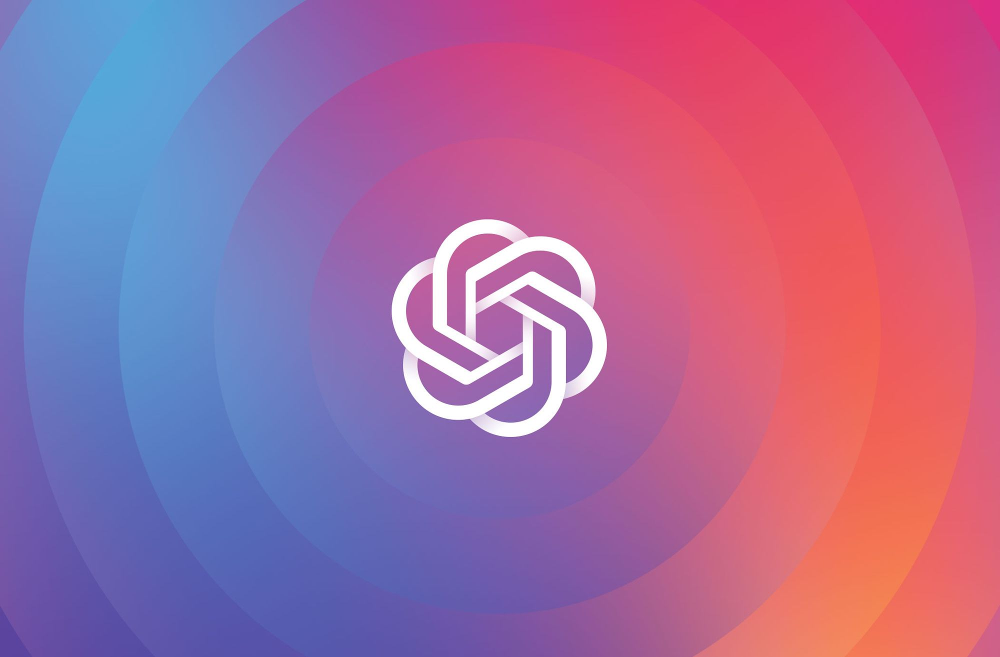

What is OpenAI?
Written by the OpenAI team
OpenAI’s mission is to ensure that artificial general intelligence benefits all of humanity. We’re a team of a hundred people based in San Francisco, California. The OpenAI Charter describes the principles that guide us as we execute on our mission.
OpenAI’s mission is to ensure that artificial general intelligence (AGI)—by which we mean highly autonomous systems that outperform humans at most economically valuable work—benefits all of humanity. We will attempt to directly build safe and beneficial AGI, but will also consider our mission fulfilled if our work aids others to achieve this outcome.
OpenAI is governed by the board of OpenAI Nonprofit, which consists of OpenAI LP employees Greg Brockman (Chairman & CTO), Ilya Sutskever (Chief Scientist), and Sam Altman (CEO), and non-employees Adam D’Angelo, Holden Karnofsky, Reid Hoffman, Sue Yoon, and Tasha McCauley.
Our investors include Reid Hoffman’s charitable foundation and Khosla Ventures. We feel lucky to have mission-aligned, impact-focused, helpful investors!